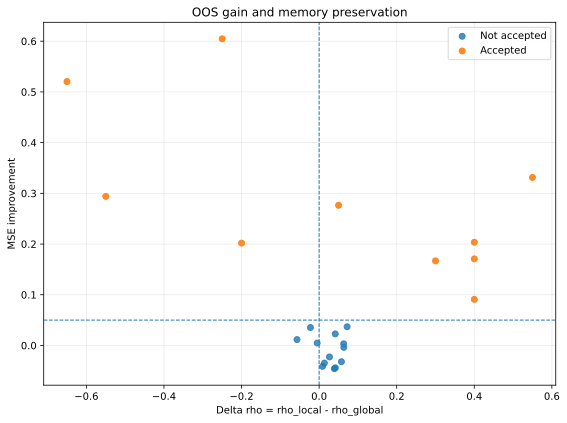

Question and scope
The research question is narrow by design. For each predefined regime window, the framework asks whether a regime-specific admissible differencing order improves out-of-sample performance relative to a baseline order estimated from pre-regime history.
The release is limited to the methodological core when applied to externally provided arrays, selected accepted empirical cases, and a compact audit layer. It is not a production platform, not a full replication package, and not a claim of predictive generality across all macroeconomic release series.
Released implementation
The released implementation contains the public decision logic in six stages. The sequence below mirrors the methodological structure of the repository.
Transformation
Map the raw series to the released level or log scale before differencing.
Fixed-width FFD
Apply truncated fractional differencing on the released admissible grid.
Admissibility
Select the smallest admissible order satisfying the released ADF rule.
Chronological validation
Compare baseline and local specifications under a causal regime split.
Decision
Require both predictive gain and a material shift in admissible differencing order.
Audit
Return explicit failure reasons and compact reliability warnings.
Study frame
Public analysis period: [INSERT START DATE] to [INSERT END DATE].
Macroeconomic release observations are sparse. Regime windows are therefore evaluated only when the release count is sufficient to satisfy the released minimum support requirements for baseline estimation, regime training, and regime testing.
Worked example
One regime-window pair is processed through the same released stages used by the implementation. The purpose of this section is to show the mechanics of the procedure, not to disclose private data.
before_values for the pre-regime baseline and
during_values for the regime window.
SEGMENTED only if the regime-specific
specification delivers sufficient out-of-sample improvement and the shift in
admissible differencing order is materially non-zero.
{
"pair_id": "YOUR_SERIES|Window_1",
"label": "SEGMENTED",
"d_global": 0.05,
"d_local": 0.70,
"delta_d": 0.65,
"mse_global": 0.1180,
"mse_local": 0.0566,
"mse_improvement": 0.5204,
"reliability_flag": "none"
}Accepted empirical cases
Out of 168 tested series-window pairs, 10 satisfied the public admissibility, out-of-sample, and segmentation criteria.
| Series | Break | Window | Ntrain | Ntest | dglobal | dlocal | Δd | MSE improvement | Reliability flag |
|---|---|---|---|---|---|---|---|---|---|
| NAPMPMI | Eurozone | EurozoneW3 | 8 | 6 | 0.7000 | 0.9500 | 0.2500 | 0.6047 | boundary |
| CPI | LatinAmerica | LatinAmericaW1 | 8 | 6 | 0.0500 | 0.7000 | 0.6500 | 0.5204 | none |
| MXUERATE | EurozoneSlowdown | EurozoneSlowdownW1 | 8 | 6 | 0.5500 | 0.0000 | -0.5500 | 0.3313 | boundary |
| MXUERATE | LatinAmerica | LatinAmericaW1 | 8 | 6 | 0.0000 | 0.5500 | 0.5500 | 0.2940 | boundary |
| IPLAST | LatinAmerica | LatinAmericaW1 | 8 | 6 | 0.2500 | 0.2000 | -0.0500 | 0.2764 | none |
| NAPMNMI | EurozoneSlowdown | EurozoneSlowdownW1 | 8 | 6 | 0.4000 | 0.0000 | -0.4000 | 0.2035 | boundary |
| MXCP | EurozoneSlowdown | EurozoneSlowdownW1 | 8 | 6 | 0.0500 | 0.2500 | 0.2000 | 0.2018 | none |
| MXCCLAST | EurozoneSlowdown | EurozoneSlowdownW1 | 8 | 6 | 0.6500 | 0.2500 | -0.4000 | 0.1708 | none |
| NAPMPMI | LatinAmerica | LatinAmericaW1 | 8 | 6 | 0.4000 | 0.1000 | -0.3000 | 0.1668 | none |
| CPIX | LatinAmerica | LatinAmericaW1 | 8 | 6 | 0.5500 | 0.1500 | -0.4000 | 0.0909 | none |
Accepted case notes
- NAPMPMI / Eurozone / EurozoneW3: the local admissible order rises from 0.70 to 0.95, with out-of-sample MSE improvement of 0.6047. The case passes with a boundary warning.
- CPI / LatinAmerica / LatinAmericaW1: the local admissible order rises from 0.05 to 0.70, with MSE improvement of 0.5204. This is a large upward shift without a public reliability warning.
- MXUERATE / EurozoneSlowdown / EurozoneSlowdownW1: the local admissible order falls from 0.55 to 0.00, with MSE improvement of 0.3313. The case passes with a boundary warning.
- MXUERATE / LatinAmerica / LatinAmericaW1: the local admissible order rises from 0.00 to 0.55, with MSE improvement of 0.2940. The case passes with a boundary warning.
- IPLAST / LatinAmerica / LatinAmericaW1: the local admissible order decreases slightly from 0.25 to 0.20, with MSE improvement of 0.2764. The shift is small but still passes the released threshold.
- NAPMNMI / EurozoneSlowdown / EurozoneSlowdownW1: the local admissible order falls from 0.40 to 0.00, with MSE improvement of 0.2035. The case passes with a boundary warning.
- MXCP / EurozoneSlowdown / EurozoneSlowdownW1: the local admissible order rises from 0.05 to 0.25, with MSE improvement of 0.2018 and no public warning.
- MXCCLAST / EurozoneSlowdown / EurozoneSlowdownW1: the local admissible order falls from 0.65 to 0.25, with MSE improvement of 0.1708 and no public warning.
- NAPMPMI / LatinAmerica / LatinAmericaW1: the local admissible order falls from 0.40 to 0.10, with MSE improvement of 0.1668 and no public warning.
- CPIX / LatinAmerica / LatinAmericaW1: the local admissible order falls from 0.55 to 0.15, with MSE improvement of 0.0909. This is the weakest passing case in the released set.
Summary figures
These figures are exported from the released empirical summary rather than drawn manually in the page. That prevents visual scale drift and keeps the plot geometry consistent with the underlying data.
Out-of-sample MSE improvement across accepted cases

The accepted set is sparse, and the strongest gains are concentrated in a smaller subset of cases.
Baseline and regime-specific admissible orders

The sign of the admissible shift varies across accepted cases, which is consistent with regime-conditional persistence change rather than one uniform directional adjustment.
Out-of-sample gain and memory preservation
The released decision rule requires predictive improvement and a material shift in admissible differencing order. The figure below shows a separate descriptive trade-off between out-of-sample gain and memory preservation for 23 estimable pairs. Accepted cases are highlighted.
Trade-off across 23 estimable pairs

This plot is descriptive. It is intended to show how predictive gain and preservation of low-frequency structure coexist across the estimable public subset. It does not replace the released gate logic.
Implications
The accepted set does not support a uniform persistence adjustment across regime windows. The sign and magnitude of the admissible shift vary across accepted cases, which is consistent with regime-conditional memory structure rather than a single stable global order.
The released evidence is methodological rather than universal. It shows that, for a restricted subset of tested pairs, regime-specific admissible orders can reduce out-of-sample loss under a causal split. It does not show that local estimation dominates globally across all macroeconomic release series.
The practical implication is narrow: under sparse macroeconomic releases and constrained regime length, segmentation may be justified only for a minority of estimable cases, and only when predictive gain and memory change survive the released gates jointly.
Decision rule
A pair is labelled SEGMENTED only when two conditions hold at the same time.
- The regime-specific specification reduces out-of-sample mean squared error by at least 5 percent relative to the baseline specification.
- The absolute difference between the regime-specific admissible order and the baseline admissible order is at least 0.05.
If the predictive gain is smaller than 5 percent, the pair does not pass. If the shift in admissible differencing order is smaller than 0.05, the pair also does not pass.
Reliability logic
The released reliability layer is a compact warning system. It separates stronger accepted cases from potentially fragile accepted cases without claiming formal uncertainty quantification.
boundary
At least one estimated differencing order lies at the edge of the released admissible grid.
sample_bind
The effective training or test support is at the released minimum floor imposed by the chronological split.
stability
The implied persistence shift is large enough to warrant caution in interpretation.
This site describes only the compact reliability warnings generated by the released public layer.
Publication boundary
- Public: methodological core, released decision logic, selected accepted empirical cases, and compact reliability flags.
- Omitted: proprietary data, private paths, internal notebook chains, private robustness infrastructure, and study-specific private registries.
- Interpretation limit: accepted cases do not establish predictive generality across all macroeconomic release series.
Limitations
- The public site reports accepted empirical cases, not full discovery output.
- The released reliability layer is not formal uncertainty quantification.
- The workflow relies on predefined exogenous regime windows rather than estimating endogenous breakpoints.
- The released code is a methodological companion, not the private research system end to end.
- Macroeconomic release observations are sparse. Regime windows are therefore constrained by minimum baseline, training, and test support requirements so that the resulting comparison remains quantitatively meaningful.
- Because admissibility and out-of-sample validation both require sufficient release support, some economically relevant regime periods may be too short to be evaluated within the released gate structure.
- The public analysis period must be read together with these support constraints, because the feasible evaluation set depends on both calendar span and release density.
Reproducibility
The public repository is reproducible at the level of methodological logic
when applied to externally provided arrays. Repository-level source code
remains in the src/ layer rather than inside the site directory.
The public module is src/core_pipeline.py. The snippet below shows
how to import and call the released implementation on externally provided arrays.
import numpy as np
import src.core_pipeline as cp
cp.LEVEL_SERIES = frozenset({"YOUR_SERIES"})
# Alternatively, register the series in cp.LOG_SERIES if log transformation is appropriate.
before = np.array([...], dtype=float)
during = np.array([...], dtype=float)
result = cp.validate_regime(
series_name="YOUR_SERIES",
before_values=before,
during_values=during,
pair_id="YOUR_SERIES|Window_1",
)
print(result)Repository structure
.
├── README.md
├── src/
│ └── core_pipeline.py
├── docs/
│ ├── index.html
│ ├── algorithm.html
│ └── assets/
└── .gitignore
The website is published from docs/. Repository-level documentation
and source code remain outside the site layer and are linked through GitHub.